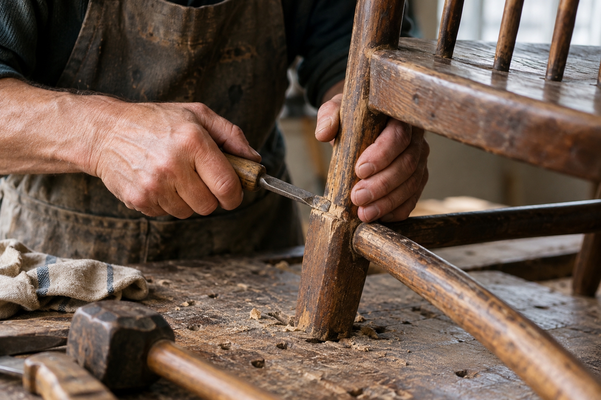

Good Gardener starts with a simple idea: good work deserves to be seen.
A good gardener is someone who does a good job at what they do. The best job. Someone serious about their craft, dedicated to their work, and determined to bring something to life.
That person might be an artist. A maker. A teacher. Someone who puts care into a community, a creation, or a skill they have spent years learning.
Good Gardener is a nonprofit that sells clothes, helps the community, and, above all, honors good gardeners around the world.
One good gardener. Every month.
The Good Gardener of the Month award recognizes a new person and the work that makes them extraordinary. Their story belongs on our homepage, where everyone can find it.
We believe dedication matters. So does the care behind the finished work. We want to celebrate both.